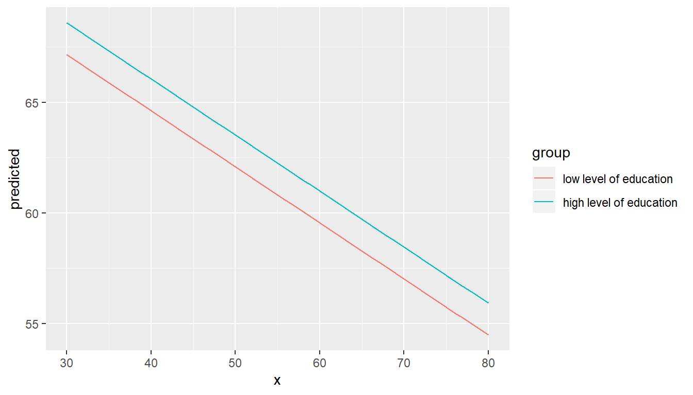
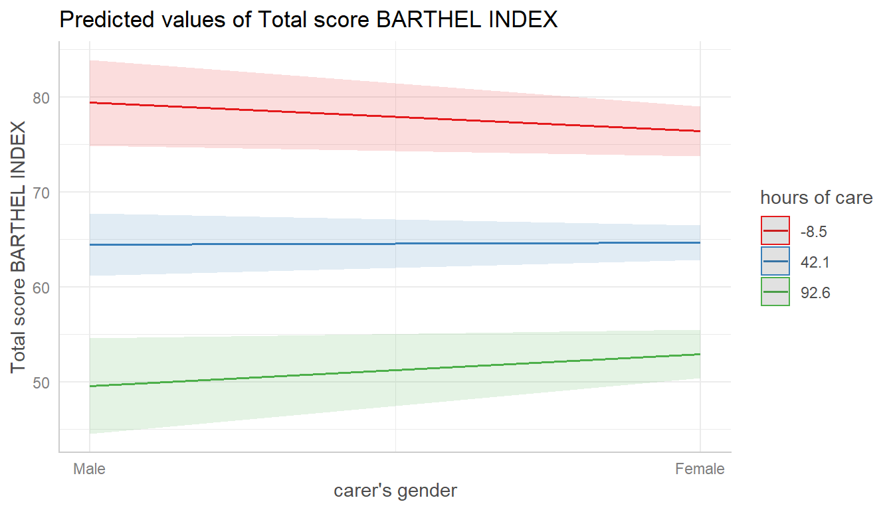
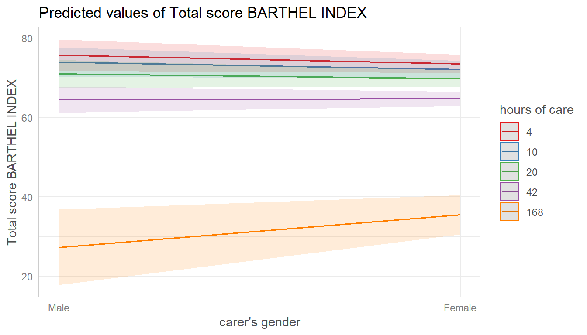
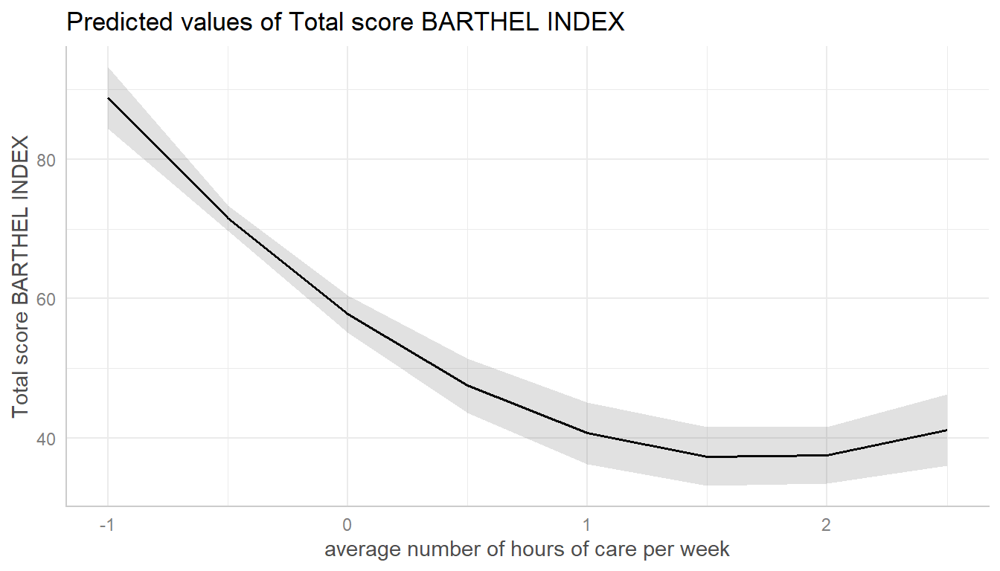
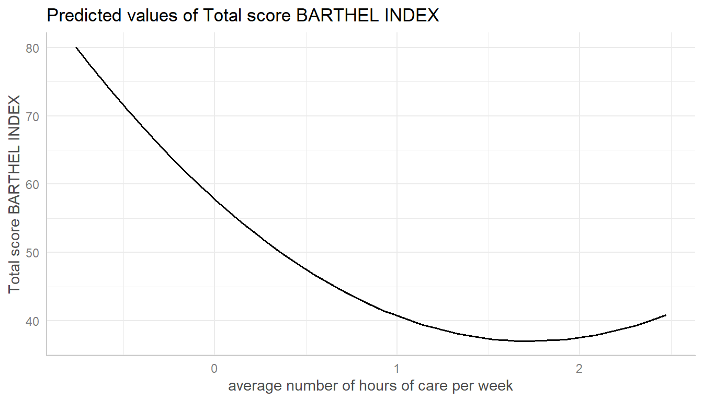
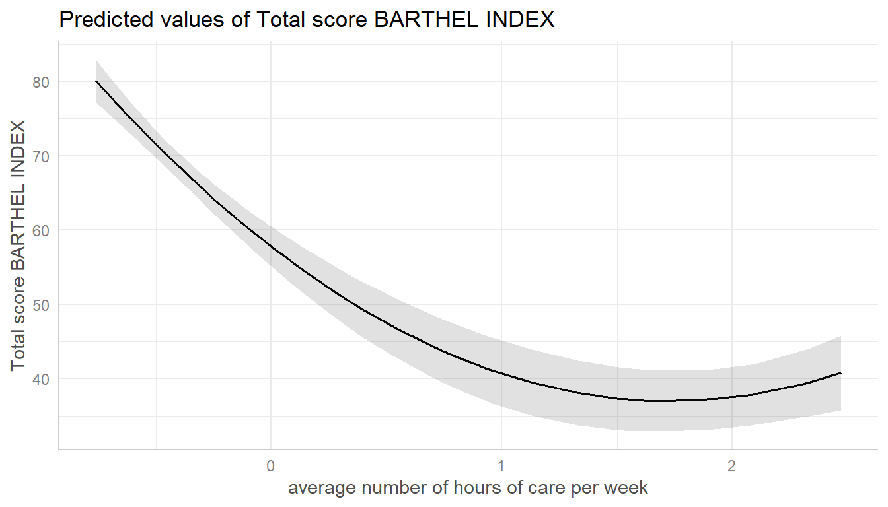
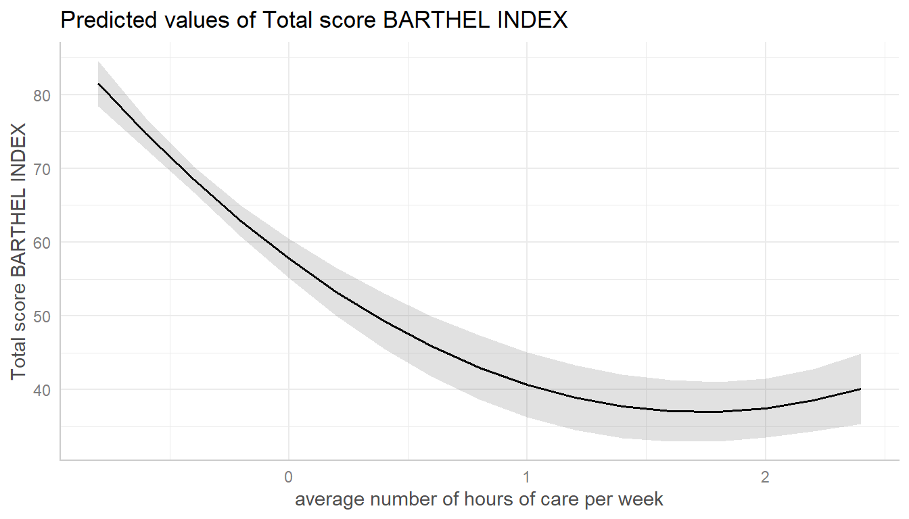
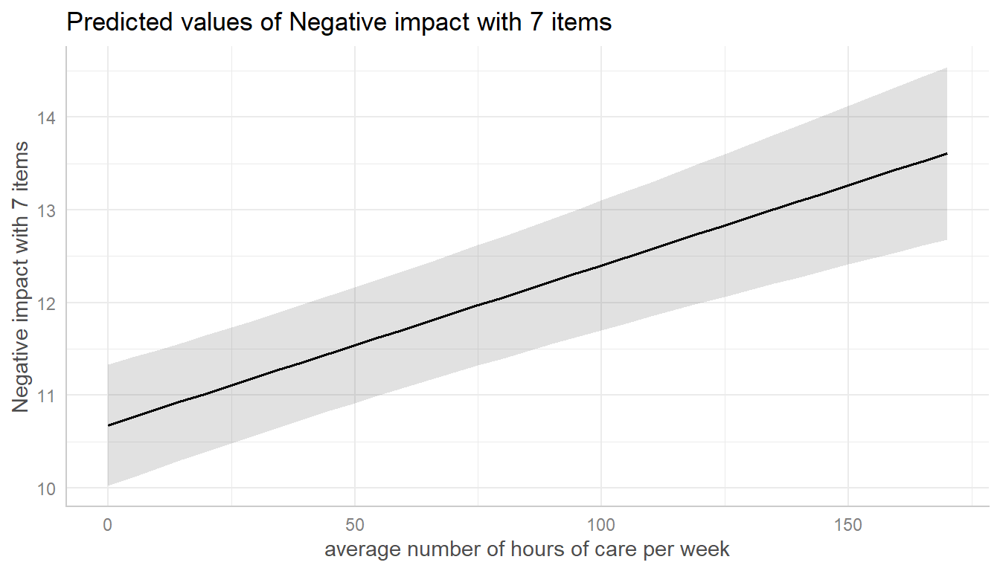
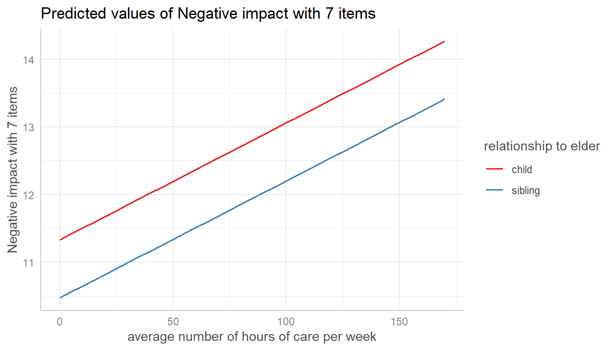

Introduction: Marginal Effects at Specific Values
Daniel Lüdecke
2019-09-03
introduction_effectsatvalues.RmdMarginal effects at specific values or levels
This vignettes shows how to calculate marginal effects at specific values or levels for the terms of interest. It is recommended to read the general introduction first, if you haven’t done this yet.
The terms-argument not only defines the model terms of interest, but each model term can be limited to certain values. This allows to compute and plot marginal effects for (grouping) terms at specific values only, or to define values for the main effect of interest.
There are several options to define these values, which always should be placed in square brackets directly after the term name and can vary for each model term.
Concrete values are separated by a comma:
terms = "c172code [1,3]". For factors, you could also use factor levels, e.g.terms = "Species [setosa,versicolor]".Ranges are specified with a colon:
terms = c("c12hour [30:80]", "c172code [1,3]"). This would plot all values from 30 to 80 for the variable c12hour. By default, the step size is 1, i.e.[1:4]would create the range1, 2, 3, 4. You can choose different step sizes withby, e.g.[1:4 by=.5].Convenient shortcuts to calculate common values like mean +/- 1 SD (
terms = "c12hour [meansd]"), quartiles (terms = "c12hour [quart]") or minumum and maximum values (terms = "c12hour [minmax]"). Seevalues_at()for the different options.A function name. The function is then applied to all unique values of the indicated variable, e.g.
terms = "hp [exp]". You can also define own functions, and pass the name of it to theterms-values, e.g.terms = "hp [own_function]".If the first variable specified in
termsis a numeric vector, for which no specific values are given, a “pretty range” is calculated (seepretty_range()), to avoid memory allocation problems for vectors with many unique values. To select all values, use the[all]-tag, e.g.terms = "mpg [all]". If a numeric vector is specified as second or third variable interm(i.e. if this vector represents a grouping structure), representative values (seevalues_at()) are chosen, which is typically mean +/- SD.To create a pretty range that should be smaller or larger than the default range (i.e. if no specific values would be given), use the
n-tag, e.g.terms = "age [n=5]"orterms = "age [n = 12]". Larger values fornreturn a larger range of predicted values.Especially useful for plotting group levels of random effects with many levels, is the
sample-option, e.g.terms = "Subject [sample=9]", which will sample nine values from all possible values of the variableSubject.
Specific values and value range
library(ggeffects)
library(ggplot2)
data(efc)
fit <- lm(barthtot ~ c12hour + neg_c_7 + c161sex + c172code, data = efc)
mydf <- ggpredict(fit, terms = c("c12hour [30:80]", "c172code [1,3]"))
mydf
#>
#> # Predicted values of Total score BARTHEL INDEX
#> # x = average number of hours of care per week
#>
#> # c172code = low level of education
#> x predicted std.error conf.low conf.high
#> 30 67.147 1.587 64.037 70.257
#> 38 65.121 1.562 62.059 68.183
#> 47 62.841 1.549 59.806 65.877
#> 55 60.815 1.550 57.777 63.853
#> 63 58.788 1.564 55.723 61.854
#> 80 54.482 1.632 51.283 57.682
#>
#> # c172code = high level of education
#> x predicted std.error conf.low conf.high
#> 30 68.584 1.616 65.417 71.751
#> 38 66.558 1.616 63.390 69.725
#> 47 64.278 1.631 61.082 67.474
#> 55 62.252 1.656 59.006 65.497
#> 63 60.225 1.692 56.908 63.542
#> 80 55.919 1.803 52.386 59.452
#>
#> Adjusted for:
#> * neg_c_7 = 11.84
#> * c161sex = 1.76
ggplot(mydf, aes(x, predicted, colour = group)) + geom_line()
Defining value ranges is especially useful when variables are, for instance, log-transformed. ggpredict() then typically only uses the range of the log-transformed variable, which is in most cases not what we want. In such situation, specify the range in the terms-argument.
data(mtcars)
mpg_model <- lm(mpg ~ log(hp), data = mtcars)
# x-values and predictions based on the log(hp)-values
ggpredict(mpg_model, "hp")
#>
#> # Predicted values of mpg
#> # x = hp
#>
#> x predicted std.error conf.low conf.high
#> 3.8 58.270 4.380 49.685 66.855
#> 4.0 57.718 4.318 49.255 66.181
#> 4.4 56.692 4.202 48.456 64.928
#> 4.6 56.214 4.148 48.083 64.344
#> 4.8 55.756 4.097 47.726 63.785
#> 5.0 55.316 4.047 47.384 63.249
#> 5.2 54.894 4.000 47.055 62.733
#> 5.8 53.719 3.867 46.139 61.299
# x-values and predictions based on hp-values from 50 to 150
ggpredict(mpg_model, "hp [50:150]")
#>
#> # Predicted values of mpg
#> # x = hp
#>
#> x predicted std.error conf.low conf.high
#> 50 30.531 1.318 27.947 33.115
#> 63 28.043 1.071 25.945 30.141
#> 75 26.166 0.897 24.407 27.925
#> 87 24.569 0.766 23.067 26.071
#> 100 23.070 0.665 21.765 24.374
#> 113 21.754 0.603 20.572 22.936
#> 125 20.668 0.576 19.538 21.797
#> 150 18.705 0.594 17.541 19.869By default, the step size for a range is 1, like 50, 51, 52, .... If you need a different step size, use by=<stepsize> inside the brackets, e.g. "hp [50:60 by=.5]". This would create a range from 50 to 60, with .5er steps.
# range for x-values with .5-steps
ggpredict(mpg_model, "hp [50:60 by=.5]")
#>
#> # Predicted values of mpg
#> # x = hp
#>
#> x predicted std.error conf.low conf.high
#> 50.0 30.531 1.318 27.947 33.115
#> 51.5 30.213 1.286 27.692 32.733
#> 52.5 30.006 1.265 27.527 32.485
#> 53.5 29.802 1.244 27.364 32.241
#> 55.0 29.505 1.214 27.125 31.885
#> 56.5 29.215 1.185 26.892 31.538
#> 57.5 29.026 1.167 26.740 31.313
#> 60.0 28.568 1.121 26.370 30.766Choosing representative values
Especially in situations where we have two continuous variables in interaction terms, or where the “grouping” variable is continuous, it is helpful to select representative values of the grouping variable - else, predictions would be made for too many groups, which is no longer helpful when interpreting marginal effects.
You can use
-
"minmax": minimum and maximum values (lower and upper bounds) of the variable are used. -
"meansd": uses the mean value as well as one standard deviation below and above mean value. -
"zeromax": is similar to the"minmax"option, however, 0 is always used as minimum value. This may be useful for predictors that don’t have an empirical zero-value. -
"quart"calculates and uses the quartiles (lower, median and upper), including minimum and maximum value. -
"quart2"calculates and uses the quartiles (lower, median and upper), excluding minimum and maximum value. -
"all"takes all values of the vector.
data(efc)
# short variable label, for plot
attr(efc$c12hour, "label") <- "hours of care"
fit <- lm(barthtot ~ c12hour * c161sex + neg_c_7, data = efc)
mydf <- ggpredict(fit, terms = c("c161sex", "c12hour [meansd]"))
plot(mydf)

Transforming values with functions
The brackets in the terms-argument also accept the name of a valid function, to (back-)transform predicted valued. In this example, an alternative would be to specify that values should be exponentiated, which is indicated by [exp] in the terms-argument:
# x-values and predictions based on exponentiated hp-values
ggpredict(mpg_model, "hp [exp]")
#>
#> # Predicted values of mpg
#> # x = hp
#>
#> x predicted std.error conf.low conf.high
#> 52 30.109 1.275 27.609 32.608
#> 66 27.542 1.023 25.537 29.547
#> 93 23.851 0.715 22.450 25.252
#> 105 22.544 0.637 21.296 23.793
#> 113 21.754 0.603 20.572 22.936
#> 150 18.705 0.594 17.541 19.869
#> 205 15.343 0.787 13.800 16.885
#> 335 10.056 1.277 7.553 12.559It is possible to define any function, also custom functions:
# x-values and predictions based on doubled hp-values
hp_double <- function(x) 2 * x
ggpredict(mpg_model, "hp [hp_double]")
#>
#> # Predicted values of mpg
#> # x = hp
#>
#> x predicted std.error conf.low conf.high
#> 7.902 50.389 3.493 43.542 57.236
#> 8.379 49.758 3.423 43.050 56.467
#> 9.065 48.911 3.328 42.389 55.434
#> 9.308 48.627 3.296 42.167 55.087
#> 9.455 48.459 3.277 42.036 54.881
#> 10.021 47.832 3.207 41.547 54.117
#> 10.646 47.181 3.134 41.039 53.324
#> 11.628 46.231 3.028 40.297 52.166Pretty value ranges
This section is intended to show some examples how the plotted output differs, depending on which value range is used. Some transformations, like polynomial or spline terms, but also quadratic or cubic terms, result in many predicted values. In such situation, predictions for some models lead to memory allocation problems. That is why ggpredict() “prettifies” certain value ranges by default, at least for some model types (like mixed models).
To see the difference in the “curvilinear” trend, we use a quadratic term on a standardized variable.
library(sjmisc)
library(sjlabelled)
library(lme4)
data(efc)
efc$c12hour <- std(efc$c12hour)
efc$e15relat <- as_label(efc$e15relat)
m <- lmer(
barthtot ~ c12hour + I(c12hour^2) + neg_c_7 + c160age + c172code + (1 | e15relat),
data = efc
)
me <- ggpredict(m, terms = "c12hour")
plot(me)
Turn off “prettifying”
As said above, ggpredict() “prettifies” the vector, resulting in a smaller set of unique values. This is less memory consuming and may be needed especially for more complex models.
You can turn off automatic “prettifying” by adding the "all"-shortcut to the terms-argument.

This results in a smooth plot, as all values from the term of interest are taken into account.
Using different ranges for prettifying
To modify the “prettifying”, add the "n"-shortcut to the terms-argument. This allows you to select a feasible range of values that is smaller (and hence less memory consuming) them "terms = ... [all]", but still produces smoother plots than the default prettyfing.


Marginal effects conditioned on specific values of the covariates
By default, the typical-argument determines the function that will be applied to the covariates to hold these terms at constant values. By default, this is the mean-value, but other options (like median or mode) are possible as well.
Use the condition-argument to define other values at which covariates should be held constant. condition requires a named vector, with the name indicating the covariate.
data(mtcars)
mpg_model <- lm(mpg ~ log(hp) + disp, data = mtcars)
# "disp" is hold constant at its mean
ggpredict(mpg_model, "hp [exp]")
#>
#> # Predicted values of mpg
#> # x = hp
#>
#> x predicted std.error conf.low conf.high
#> 52 25.609 1.873 21.938 29.281
#> 66 24.195 1.434 21.384 27.006
#> 93 22.162 0.846 20.503 23.821
#> 105 21.442 0.673 20.123 22.762
#> 113 21.007 0.590 19.851 22.163
#> 150 19.327 0.566 18.218 20.437
#> 205 17.475 0.994 15.526 19.424
#> 335 14.563 1.876 10.886 18.240
#>
#> Adjusted for:
#> * disp = 230.72
# "disp" is hold constant at value 200
ggpredict(mpg_model, "hp [exp]", condition = c(disp = 200))
#>
#> # Predicted values of mpg
#> # x = hp
#>
#> x predicted std.error conf.low conf.high
#> 52 26.297 1.697 22.971 29.623
#> 66 24.883 1.266 22.402 27.364
#> 93 22.850 0.716 21.447 24.253
#> 105 22.130 0.582 20.990 23.271
#> 113 21.695 0.536 20.645 22.745
#> 150 20.015 0.683 18.676 21.354
#> 205 18.163 1.168 15.874 20.452
#> 335 15.251 2.063 11.208 19.294Marginal effects for each level of random effects
Marginal effects can also be calculated for each group level in mixed models. Simply add the name of the related random effects term to the terms-argument, and set type = "re".
In the following example, we fit a linear mixed model and first simply plot the marginal effetcs, not conditioned on random effects.
library(sjlabelled)
library(lme4)
data(efc)
efc$e15relat <- as_label(efc$e15relat)
m <- lmer(neg_c_7 ~ c12hour + c160age + c161sex + (1 | e15relat), data = efc)
me <- ggpredict(m, terms = "c12hour")
plot(me)
Changing the type to type = "re" still returns population-level predictions by default. The major difference between type = "fe" and type = "re" is the uncertainty in the variance parameters. This leads to larger confidence intervals for marginal effects with type = "re".

To compute marginal effects for each grouping level, add the related random term to the terms-argument. In this case, confidence intervals are not calculated, but marginal effects are conditioned on each group level of the random effects.

Marginal effects, conditioned on random effects, can also be calculated for specific levels only. Add the related values into brackets after the variable name in the terms-argument.

If the group factor has too many levels, you can also take a random sample of all possible levels and plot the marginal effects for this subsample of group levels. To do this, use term = "<groupfactor> [sample=n]".
data("sleepstudy")
m <- lmer(Reaction ~ Days + (1 + Days | Subject), data = sleepstudy)
me <- ggpredict(m, terms = c("Days", "Subject [sample=8]"), type = "re")
plot(me)